界面原型图 · PC 调度大屏 + 移动端司机 App（实机截图，非设计稿）
http://127.0.0.1:8080/ 与 /driver.html）取得，
截图前按真实流程点过「确认选择并规划 → 拉取实时气象 → AI 气象分析并规划路线」，因此卡里显示的是运行中的真数据与真文案。
复现：node tools/_ui_shots.mjs → node tools/_ui_pack.mjs（20 张原图入 交付材料/_ui/）。
下方图墙与手机墙为等高截取（卡片取顶部、司机端取顶部或弹层所在底部），完整不裁剪图一律在 _ui/ 目录。
一、调度大屏首屏1600×1000 视口 · 顶栏 + 左栏卡片流 + 右侧地图（占屏约 3/4）
 1
2
3
4
5
6
7
8
9
10
1
2
3
4
5
6
7
8
9
10
driver.html，两端同屏联动演示App.vue 单列滚动，实测内容高 6000~9500 px）：路径规划 → 派单 → 沙盘 → AI 分析 → 触达 → 时间线 → 气象 → 路线状态 → 简报/碳排/预警/知识库 → 配置器 → 日志 → 当前风险 → 原始返回TaskDispatchPanel.vue）：车牌/司机/货物/重量/起终点 +「AI 气象分析并规划路线」，派单状态与 TASK 编号回显MapView.vue，Leaflet 1.9.4 + Canvas 渲染保护）：跨境路网、路线、风险边、口岸节点、灾害点、坐船走廊叠加二、左栏功能卡逐张拆解调度员的操作路径，自上而下即服务流程顺序；图取卡片顶部 296 px
起终点输入支持地名联想（本地地名库 → 天地图 POI → Nominatim 兜底）与地图选点；「确认选择并规划 / 清空」两键完成一次算路。
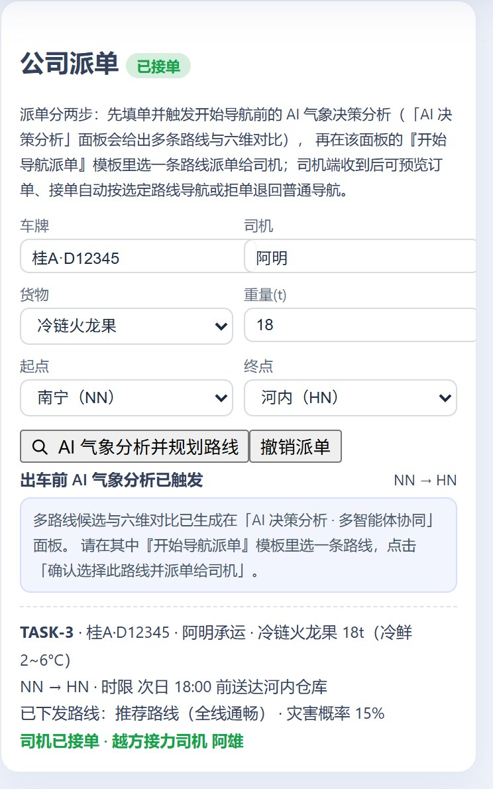
卡内自带两步派单说明；派单后回显 TASK-3、货物 18t 冷鲜 2~6°C、时限、已下发路线与灾害概率 15%，并提示「司机已接单 · 越方接力司机 阿雄」。
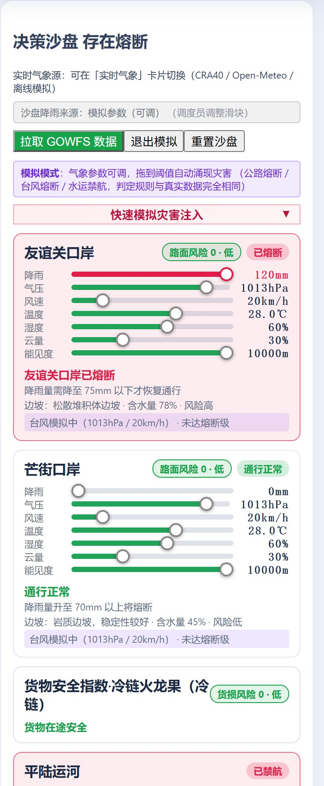
友谊关 120mm 已熔断（需降至 75mm 恢复）/ 芒街 0mm 通行正常（升至 70mm 熔断）；降雨·气压·风速·温度·湿度·云量·能见度 7 滑块，判定规则与真实数据完全相同。

平陆运河已禁航状态、各支流独立风险输出、货物安全指数（冷链火龙果 货损风险 0·低 / 货物在途安全）；手动剧本与真实降雨两档可切并标明来源。
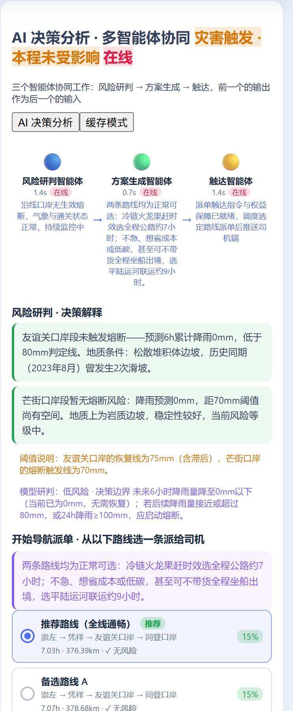
风险研判 → 方案生成 → 触达 三灯与各自耗时；逐口岸决策解释＋阈值说明（恢复线 75mm、触发线 70mm）＋模型研判；「智能体推理中… / 缓存模式」标出当前通道。

「开始导航派单 · 从以下路线选一条派给司机」：候选路线逐条给时长 / 里程 / 灾害概率（推荐路线 7.03h·376.39km·15%，图中为紧随其后的备选 B~E）；上方紫色条另给赶时效走公路 / 省成本走平陆运河联运 9 小时的取舍建议。

黄/橙/红等级横幅（通道 · 确认方式 · 升级策略）＋五类角色状态灯：已送达 / 已确认 / 外呼中；未确认倒计时到点自动升级。
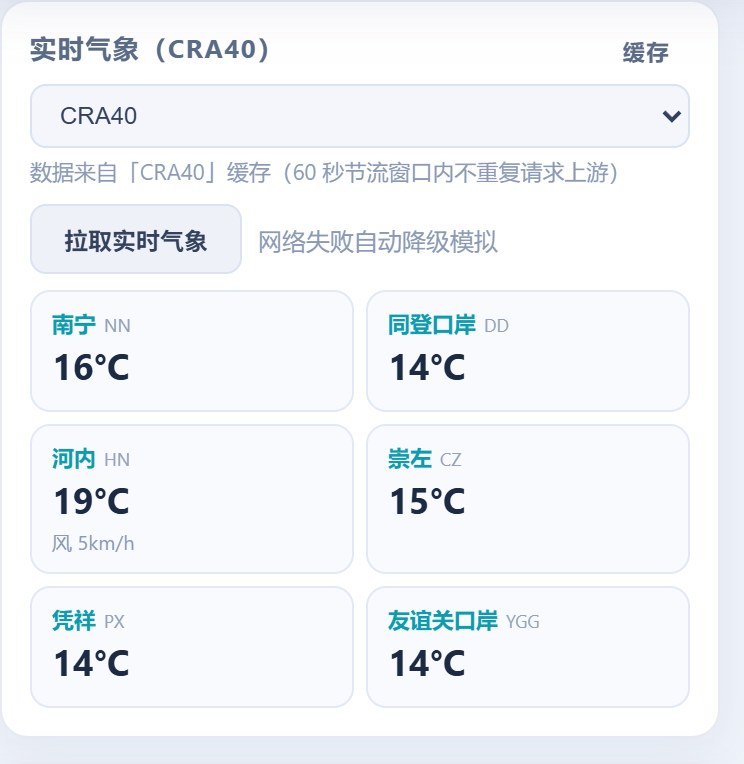
数据源下拉「CRA40 / Open-Meteo / 离线模拟」＋「拉取实时气象」；标题徽标显示实时 / 模拟降级，所选源与实际服务源分开显示。
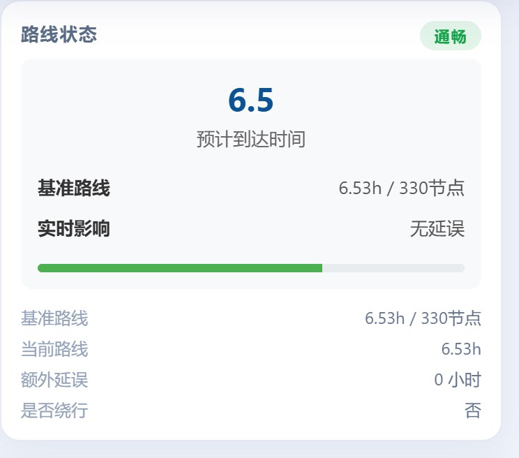
预计到达 6.5、基准路线 6.53h/330 节点、实时影响（无延误 / +2.11 小时）、是否绕行：是（自动切换口岸）——气象影响量化为两个可核对的数值。
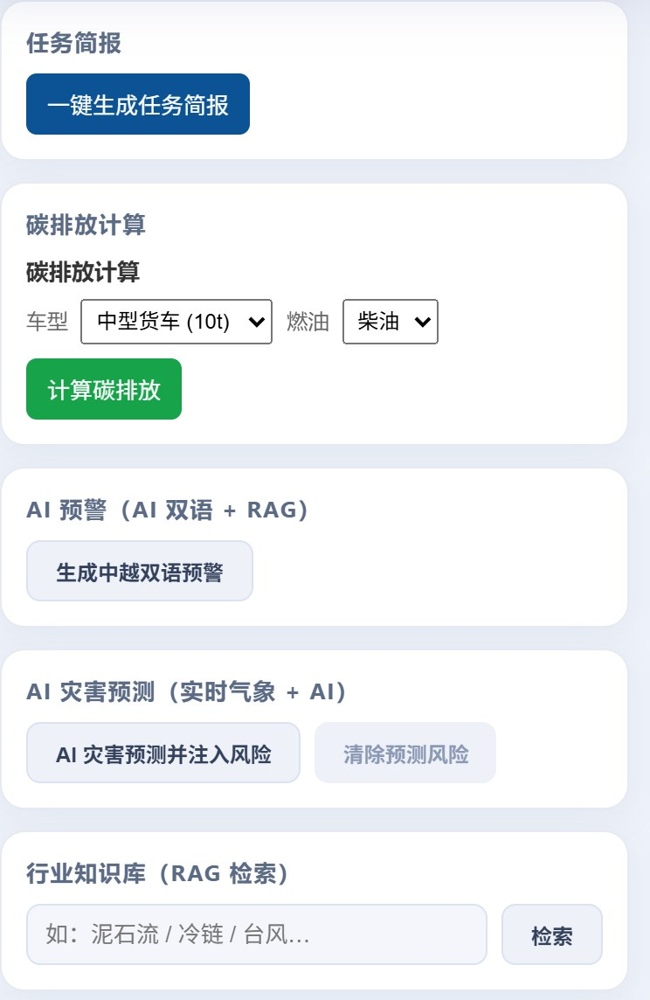
一键生成任务简报；车型+燃料算碳排放；生成中越双语预警；AI 灾害预测并注入风险（可清除）；行业知识库 RAG 检索入口。
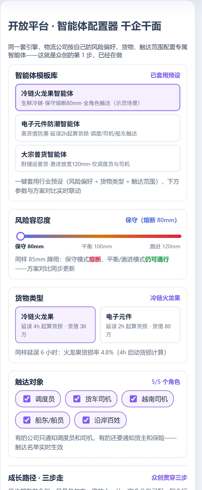
千企千面：三套模板（冷链火龙果·保守熔断 80mm·全角色触达 / 电子元件防潮·延误 2h 起算货损 / 大宗普货·激进放宽 120mm·仅调度员与司机）一键套用，下方参数与方案对比实时联动。
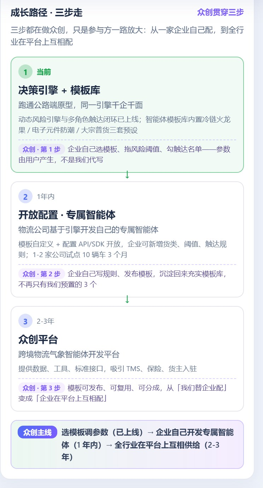
风险容忍度、货物类型（货值/起算延误）、触达角色集与阈值滑块；尾段挂众创三步走成长路径，说明这套引擎怎么交给企业自己配。

逐条留痕 10 类（FUSE / UNFUSE / WEATHER / SANDBOX / AGENT / TASK / DISPATCH / CONFIRM / ESCALATE / CONFIG，实测 60 条）＋刷新键；当前风险等级条；「原始返回」可展开核对接口原文。
路线绿段带白箭头指示行进方向，风险边橙、熔断红、基准原路线红虚线；口岸节点、灾害点、坐船走廊分色；点击备选路线可切主线。
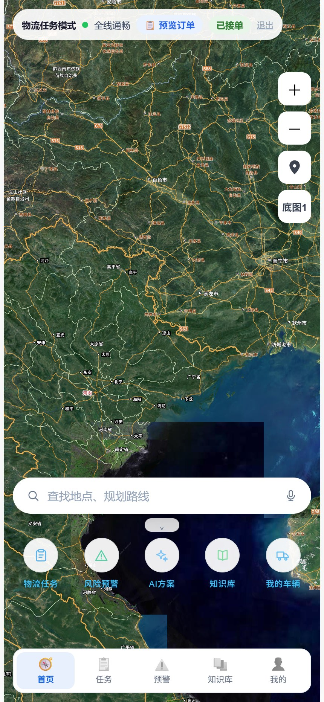
顶部「物流任务模式 · 全线通畅 · 预览订单 · 已接单 · 退出」；搜索框「查找地点、规划路线」；五宫格 物流任务 / 风险预警 / AI 方案 / 知识库 / 我的车辆；底栏五 tab。
三、司机端 App（Capacitor 瘦客户端）430×932 · 从派单叫应到回执的完整动线
地图 + 状态条；「物流任务模式」由调度端派单驱动，普通导航与任务导航一键切换。
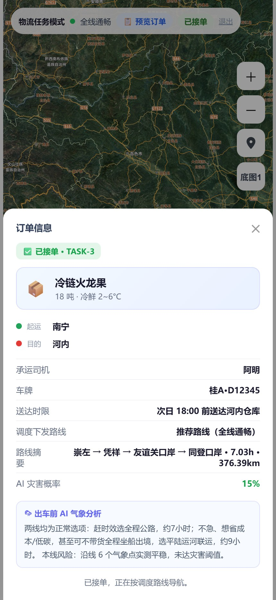
已接单 · TASK-3、冷链火龙果 18t 冷鲜 2~6°C、起运南宁→目的河内、承运司机/车牌、送达时限、调度下发路线与路线摘要、AI 灾害概率、出车前 AI 气象分析。

「任务变更通知」承接 SSE 下发的换线指令；「AI 方案建议 · 查看方案」直达调度端三方案对比——司机看得到为什么改，但不越权选方案。

AI 双语预警「生成预警」＋灾害类型 chips（暴雨/台风/大雾/高温/泥石流/冷链）；当前风险清单计数与明细。
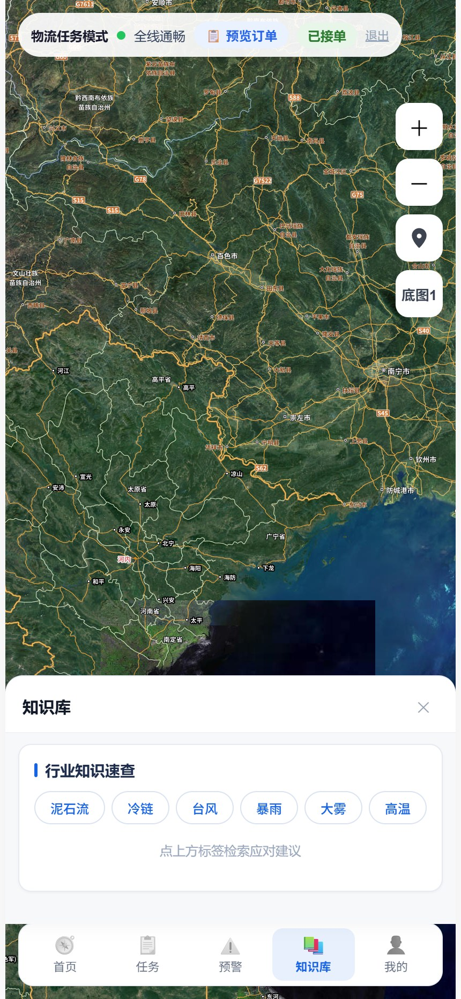
沿途作业规则与避险知识，供司机随时查阅；与大屏共用同一套 RAG 检索接口。
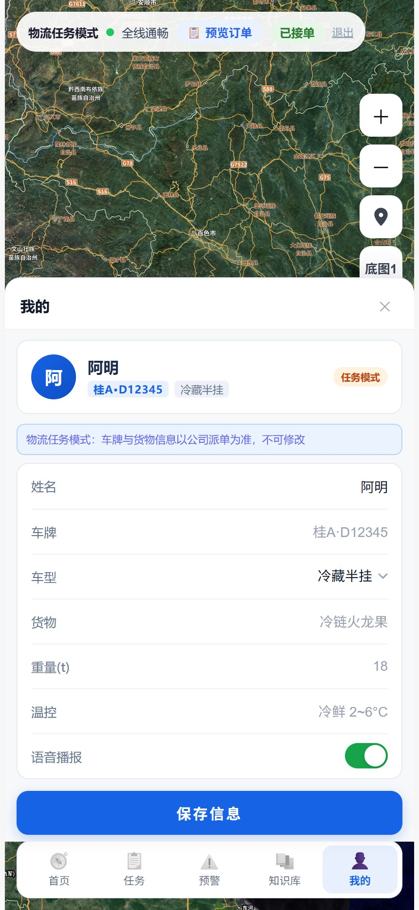
车辆与驾驶员信息（车型、载重、冷链机组）＋「保存信息」，参与货损与耗时估算的输入项。
四、界面 ↔ 组件 ↔ 接口对照可按此表逐条落到代码与请求上核验
| 界面块 | 前端组件 | 后端接口 | 可见证据 / 说明 |
|---|---|---|---|
| 跨境路径规划 | App.vue + PlaceInput.vue | /api/geocode/suggest·/snap、/api/routes/plan* | 起终点联想三级降级；坐标吸附 5 km 内取最近路网节点，超出即提示不在覆盖范围 |
| 公司派单 / 接单闭环 | TaskDispatchPanel.vue、DriverApp.vue | /api/task/dispatch·/current·/accept·/reject·/reset | 派单经 SSE task-assigned 到司机端；接单/拒单连同原因回流大屏 |
| 决策沙盘（公路/水运/货损） | DecisionSandbox.vue + TributaryPanel.vue | /api/sandbox/*、/api/canal/*、/api/weather/real | 真实降雨（GOWFS 预报）与模拟参数（可调）两档并标明来源；改档即全链路重估 |
| AI 决策分析 · 三智能体 | AgentPanel.vue | /api/agents/analysis、/api/agent/events(SSE) | 通道标签只有「本地 / 在线 / 缓存 / 模板」四种原文；数值一律由确定性引擎产出 |
| 多角色触达 · 分级叫应 | OutreachPanel.vue、DriverApp.vue | /api/outreach/dispatch·/confirm·/status·/message·/log | 五类角色、黄橙红三级、未确认自动升级外呼，红色超时上报调度端 |
| 实时气象与来源核验 | App.vue（气象卡 + 源下拉） | /api/weather/source*、/real·/real/refresh、/api/weather/rate-stats、/api/v1/* | selectedSource 与 servedSource、servedFresh 分开回显；节流与熔断计数可查 |
| 路线状态 / 当前风险 / 日志 | ETAIndicator.vue、RiskStrip.vue、DecisionLogTimeline.vue | /api/routes/status、/api/outreach/log、/api/trip/progress | 基准 vs 实时两值对比；每次结论可回溯到当时的雨量、阈值与推理通道 |
| 简报 / 碳排 / 双语预警 / 知识库 | BriefingPanel.vue、CarbonCalc.vue、App.vue | /api/briefing/generate、/api/ai/warning-bilingual·/predict-hazards、/api/knowledge/search | 中越双语预警与 RAG 检索直接可在界面复现 |
| 开放平台 · 智能体配置器 | PlatformConfigurator.vue + GrowthPath.vue | /api/platform/config(GET/PUT)、/api/platform/template | 企业画像（阈值档 / 货物 / 触达角色）改档后沙盘、方案、叫应同步重算 |
| 地图与底图 | MapView.vue（Leaflet 1.9.4）+ utils/tileSources.js | /api/tianditu/{layer}/{z}/{x}/{y}.png、/api/route/network | 密钥池轮转 + per-key 熔断 + 内存/磁盘两级缓存；底图四级降级链，断网可演示 |